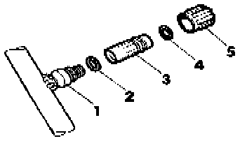

Low Side (Low Pressure)
CAUTION: Follow all safety measures when discharging or charging A/C refrigerant system. [1][2]Service PrecautionsNOTE: Low-pressure and high-pressure service valve connections used on R-134a systems are different sizes.
Removal and Installation:

1 - Refrigerant line valve connection (socket) with inner thread
2 - -O-ring
Size: 7.6 mm x 1.8 mm
Color: green (early models) or red (later models)
3 - Valve
With inner thread M8 X 1 for cap
4 - O-ring (for cap)
Size: 7.6 mm x 1.8 mm
Color: green (early models) or red (later models)
5 - Cap
- Discharge A/C refrigerant system. Service and Repair
- Loosen valve -3- and remove.